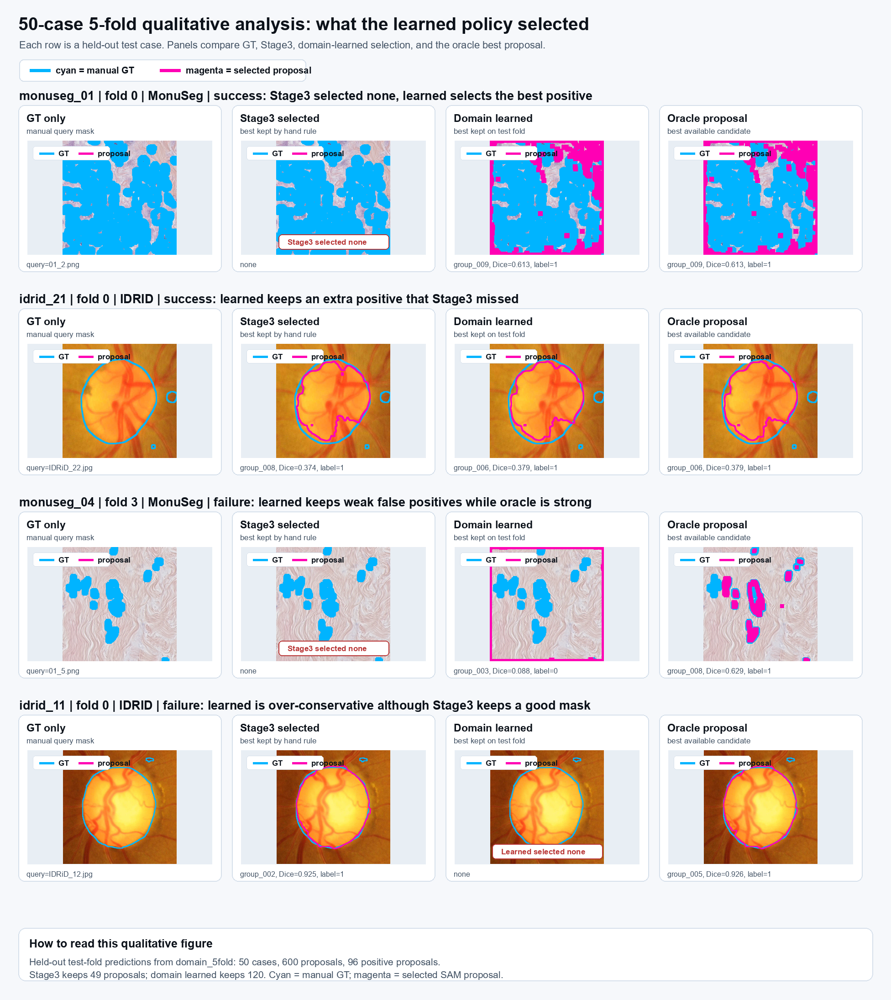
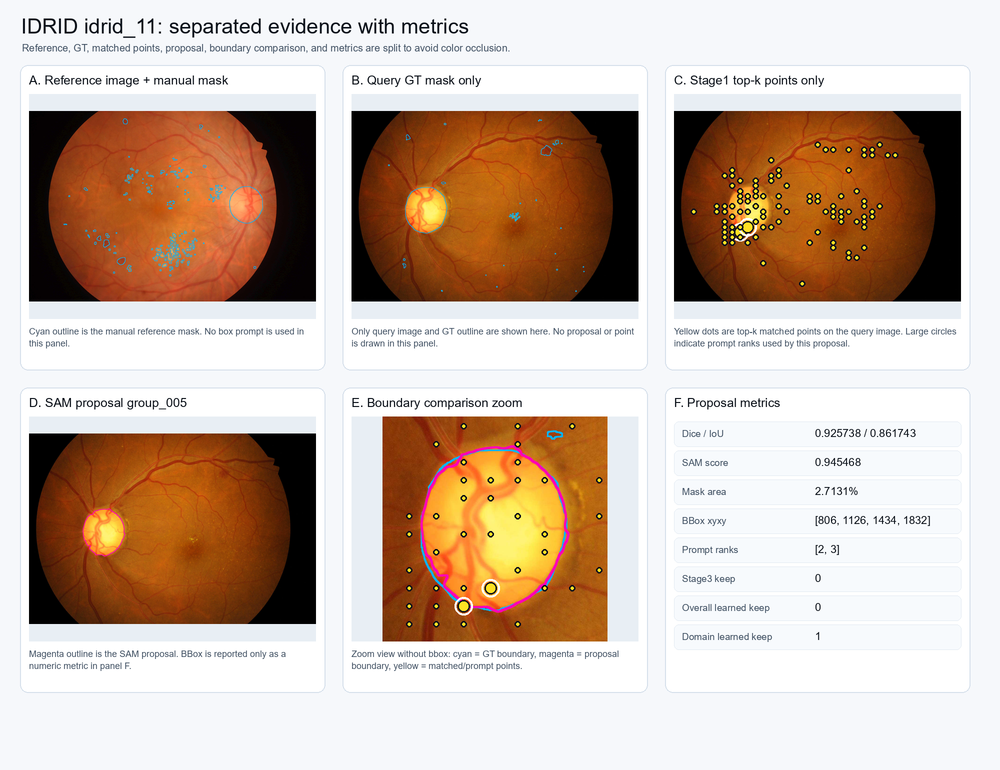
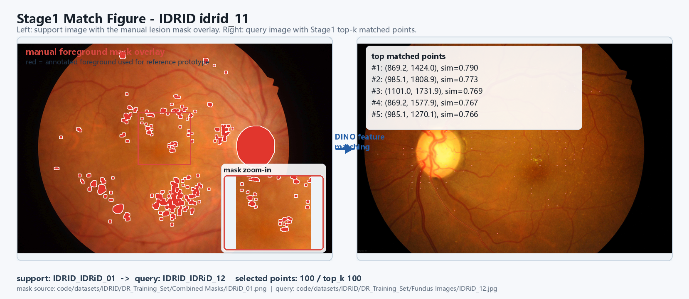
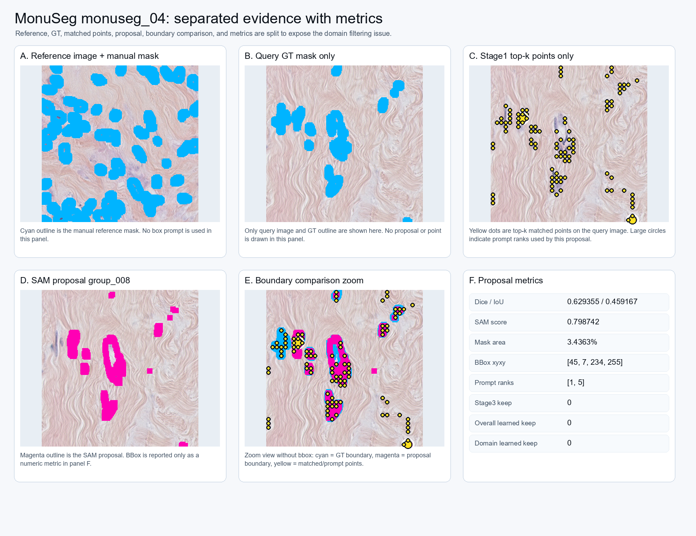
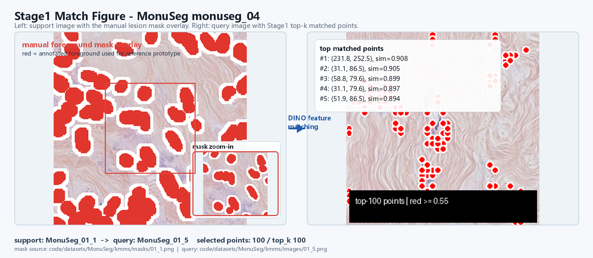

从老师问题出发，已经形成 Feedback-Learned Matcher 医学主线
目前的研究路径已经从“验证 SAM3 text/point 现象”推进到“reference mask 生成 matched points，再用 feedback 和 learning 筛选 SAM proposals”。20 例医学实验形成 240 个候选，50 例扩展形成 600 个候选；结果显示原 Stage3 手写规则偏保守，而可解释 learning 能明显改善 proposal keep/reject。
到目前为止的研究路径
汇报时可以按这条线讲：老师最初问的是 SAM3 prompt、Matcher 三阶段和 feedback；现在已经把这些问题串成一条论文主线。
一句话主线
当 SAM3 text prompt 不稳定时，不再只靠文字描述目标，而是用一张 support 图中的人工 mask 定义目标；Matcher 把这个目标迁移到 query 图上生成 matched points；SAM 负责生成多个候选 mask；最后用 feedback 和 learning 判断哪些 proposal 应该保留。
目前已经完成的证据
| 阶段 | 已经完成 | 最关键结论 |
|---|---|---|
| 自然图最小验证 | SAM3 text/point、white girl/execute failure、positive/negative point feedback | text 失败现象成立，point 和 feedback 有继续研究价值。 |
| Matcher 三阶段 | Stage1 matched points、Stage2 prompt sampling、Stage3 proposal filtering | 老师提出的 sample N% points、重复 m 次、估计 K 的流程可以跑通。 |
| 医学 20 例 | IDRID 12 + MonuSeg 8，共 240 proposals | 候选池中有好 mask，但原 Stage3 会误杀，learning 是主要突破点。 |
| 医学 50 例 | IDRID 30 + MonuSeg 20，共 600 proposals | 扩展后 learned F1 仍高于 Stage3，说明主线可以继续放大。 |
背景与问题定义
本项目的核心目标不是单独证明某一个 SAM prompt 有效，而是建立一个可解释、可交互、可学习的目标分割流程：先从 reference 图中定义“想找的目标”，再在 query 图中自动找相似位置，最后用 SAM 生成并筛选 mask。
为什么不能只依赖 SAM point 或 text
SAM/SAM3 的 point prompt 很强，但它本质上回答的是“围绕这个点切出一个合理对象”。如果用户没有提前知道每个目标在哪里，就需要一个前置模块先在 query 图中找点。text prompt 又容易受类别词、属性词和动作词影响，例如 white girl、execute 这类 prompt 在自然场景中会出现语义含混或无法落到稳定实例的问题。
本阶段需要回答的研究问题
| 问题 | 对应实验 | 当前证据 |
|---|---|---|
| a. point 是否比 text 更可靠 | 自然图与医学图中用 matched points 驱动 SAM proposal | 20 例医学闭环已形成 240 个候选 mask，说明 point-driven pipeline 可运行。 |
| b. text prompt 失败后怎么办 | 用 reference image/mask/box 替代纯文本描述 | Stage1 heatmap 和 top-k overlay 能直接显示“哪里像 reference 目标”。 |
| Stage1 大图如何处理 | sliding-window / tile 后恢复原图坐标 | 此前自然图 elephant case 已完成 tile-level matching；医学 20 例当前图像尺寸可直接跑通。 |
| Stage2+3 如何闭环 | 点聚类生成多组 prompt，SAM 生成候选，策略决定 keep/reject | Stage3 F1 0.214，learning F1 0.677，说明筛选策略是主要改进点。 |
会议问题的正面回应
这部分先回答任务本身，再放对应证据图。汇报口径是：问题是什么、当前完成到什么程度、证据来自哪里、还暴露什么缺口。
结论：已完成两层反馈闭环
点级反馈用于更新 reference/target prototype；proposal 级 accept/reject 用于形成 casebook 标签，并进一步训练 keep/reject 策略。负点不再只是 SAM 的背景点，也被解释为“背景特征”，用于压低相似度图里的错误区域。

结论：先采用可解释学习，暂不优先复杂模型
当前学习目标是 proposal 是否保留。输入特征包括 feedback_learning_score、filter_score、SAM score、cluster coverage、prompt coverage、mask area 和 bbox area。结果显示 scalar threshold / decision stump 的 LOCO F1 为 0.655738，高于当前 logistic regression 的 0.486486。

闭环逻辑与实验设计
整个流程可以看成“找点 - 组点 - 生成 mask - 筛选 mask - 反馈更新”的闭环。每一步都有可保存的中间产物，因此可以解释失败发生在哪里，也可以把人工反馈接入到后续学习。
Reference 到 Query 的 matching
从 support image 的人工标注 reference mask 中提取 DINO feature prototype，在 query feature map 上计算相似度，得到 heatmap 和 top-k matched points。reference box 只作为 mask 外接范围和记录信息，不是要强调的大框输入。
点采样与聚类
top-k 点先按相似度和空间距离筛选，再用 DBSCAN 聚类。单点、小组点、多点组都会作为 prompt group 候选。
SAM 生成候选 mask
每个 prompt group 送入 SAM，得到一批 proposal masks。这个阶段强调召回，不急于只保留一个结果。
实例级筛选
根据 instance similarity、SAM score、cluster coverage、mask/bbox 面积等特征决定 proposal keep/reject。
把纠错变成策略
正负点更新 prototype，accept/reject 形成 proposal 标签，再学习阈值、排序或小模型，反过来改进下一轮筛选。
技术实现理解校准
当前理解可以概括为：用一张带人工 mask 的 reference 图提取目标特征，在另一张 query 图上找到相似点；再把不同点组合送入 SAM 得到多个候选 mask；最后从候选中学习如何选出可信 proposal。这个方向是对的，但有几处需要说得更严谨。
| 环节 | 更准确的说法 | 当前实现 / 下一步 |
|---|---|---|
| Reference mask | 真正提供目标语义的是人工 mask，不是外接 box。box 主要用于裁剪、记录和可视化定位。 | IDRID 当前用 IDRiD_01 的人工病灶 mask 做 support，去匹配其他 IDRID query 图。 |
| Top-k points | 先在 query feature map 上计算与 reference prototype 的相似度，再取相似度最高的 top-k 点；top-k 默认可设为 100。 | 大图可用 sliding window，最后把 tile 内坐标恢复到原图坐标。 |
| DBSCAN 的 -1 | -1 是聚类里的空间噪声/离群点标签，不等于这个点语义相似度很低。它可能仍然是 top-k 高相似点。 | -1 点可以作为单点 prompt 候选，也可以在后续策略中降权；它和 negative point 不是同一概念。 |
| Negative point | negative point 表示人工反馈的背景点或错误区域，用来告诉 matcher / SAM “这里不该像目标”。 | 已做 prototype feedback 验证；后续要把正负点同时纳入 prompt 和 policy 学习。 |
| Prompt 组合 | 候选图不是随便生成，而是由单点、小组点、多点采样组合形成：例如 top1 单点、top2 两点、前若干点中抽三点。 | 当前已生成 prompt group 并送入 SAM；下一步可以学习哪些组合更容易产生好 mask。 |
| Stage3 / Learning | 目前训练的是 proposal keep/reject：给一个 SAM proposal，判断保留还是丢弃。 | 已实现分域阈值 / stump；还没有把“prompt 组合选择”完整训练成 end-to-end 策略。 |
| 训练/测试切分 | 如果有 50 张带标注图，应按 case 切分，例如每折 40 张训练、10 张测试，或 LOCO / heldout；不能把同一张图的 proposal 随机拆到 train/test 两边。 | 已补 50-case 5-fold：每折 40 case 训练、10 case 测试，5 折覆盖全部 50 case 和 600 个 proposal 标签。 |
| 换场景 | 不同场景、不同病灶、不同模态的特征分布不同，不应强行共用同一个阈值。 | IDRID 学 feedback_learning_score 阈值；MonuSeg 学 cluster_coverage 阈值，说明分域训练是必要的。 |
为什么 Stage2+3 要分开
Stage2 的目标是高召回：只要点可能落在目标附近，就尽量让 SAM 生成候选 mask。Stage3 的目标是高精度：在多个候选里判断哪个该保留。二者不能混在一起，否则会出现两类问题：过早筛点会漏掉目标，过晚筛 mask 又会保留太多错误区域。
| 阶段 | 核心目标 | 失败表现 | 当前改进 |
|---|---|---|---|
| Stage1 | 找像 reference 的位置 | 点落到背景或相似干扰物 | 引入正负点 feedback 更新 prototype |
| Stage2 | 让 SAM 多生成候选 | 候选太少或 prompt group 不合理 | 保留多种 sample size 与 cluster group |
| Stage3 | 从候选中选对 mask | 高 Dice 候选被误杀，或错误大 mask 被保留 | 用 casebook 学习 threshold / stump |
证据链如何闭合
P0 到 P4 推进结果
本次推进已经把原先的下一步计划转成可复现实验输出，结果保存在 runs/research_direction/matcher_p0_p4_progress/。
P1 分域结果
| Domain | Rows | Pos/Neg | Stage3 F1 | Learned F1 | Policy |
|---|---|---|---|---|---|
| IDRID | 144 | 23 / 121 | 0.300000 | 0.978723 | feedback_learning_score >= 1.175015 |
| MonuSeg | 96 | 16 / 80 | 0.000000 | 0.578947 | cluster_coverage >= 1.0 |
P4 模型对比
| Model | Precision | Recall | F1 | Accuracy |
|---|---|---|---|---|
| scalar threshold | 0.909091 | 0.512821 | 0.655738 | 0.912500 |
| decision stump | 0.909091 | 0.512821 | 0.655738 | 0.912500 |
| logistic regression | 0.375000 | 0.692308 | 0.486486 | 0.762500 |
P0 review 优先级样例
review 不应随机看 240 个 proposal，而应优先看“伪标签认为好，但 Stage3 没保留”的冲突样本。这类样本最能暴露筛选规则的问题。
| case | group | reason | Dice | stage3 | score |
|---|---|---|---|---|---|
| idrid_11 | 005 | positive but filtered | 0.925738 | 0 | 1.175015 |
| idrid_01 | 012 | positive but filtered | 0.691088 | 0 | 1.278738 |
| idrid_01 | 005 | positive but filtered | 0.689183 | 0 | 1.331707 |
P2 feedback 迭代模拟
这里模拟“每个 case 先标少量不确定 proposal，再用这些 accept/reject 标签学习阈值”。由于当前标签来自 Dice 伪标签，曲线较快稳定，后续人工标签会更有区分度。
| labels / case | labeled rows | pos / neg | F1 on all rows | kept |
|---|---|---|---|---|
| 1 | 20 | 5 / 15 | 0.677419 | 23 |
| 2 | 40 | 9 / 31 | 0.677419 | 23 |
| 4 | 80 | 12 / 68 | 0.677419 | 23 |
| 8 | 160 | 25 / 135 | 0.677419 | 23 |
| 12 | 240 | 39 / 201 | 0.677419 | 23 |
本节证据文件对应关系
| 文件 | 作用 | 汇报时可回答的问题 |
|---|---|---|
| p0_p4_progress.json | 完整结构化结果，包含 P0-P4、point details、folds | 所有数字从哪里来，是否能复现 |
| point_details.csv | 每个展示 case 的 top matched point 坐标 | 点具体点在哪里，match 的 query 图是哪张 |
| domain_policy_summary.csv | IDRID 与 MonuSeg 分域学习结果 | 为什么需要 domain-specific threshold |
| model_upgrade_loco.csv | scalar、stump、logistic 的 LOCO 对比 | 为什么暂不优先复杂模型 |
| review_gallery.html | 人工 review 入口 | 下一步如何把伪标签换成人工标签 |
Feedback-Learned Matcher 医学主线
这部分是今天新增的核心结果：gallery 已能显示并放大每个 proposal，20 例已有 accept/reject 种子标签，50 例已经跑完整闭环并形成论文主表。
review gallery 已修复
之前 gallery 中 proposal 图片路径为空，现在每个 proposal overlay 都能显示；点击图片可以放大查看，能按 accept/reject、Stage3 keep/drop、IDRID/MonuSeg 筛选。
20 例已有 240 个标签
当前 `manual_labels_20.json` 是 GT-assisted accept/reject 种子标签：Dice ≥ 0.30 标为 accept，否则标为 reject。它不是最终人工标签，但比 Stage3 retained/rejected 更适合作为学习入口。
| Cases | Proposals | Accept | Reject |
|---|---|---|---|
| 20 | 240 | 39 | 201 |
从手写规则转为 learned policy
学习目标很简单：给一个 SAM proposal，判断它该不该保留。输入特征包括 feedback_learning_score、SAM score、cluster coverage、prompt coverage、mask area、bbox area。
论文主表：手写 Stage3 vs Learned proposal policy
表中 F1 是 proposal-level keep/reject F1；Dice 是每个 case 选出的 best mask 与 query GT 的重叠。Oracle Dice 表示候选池中理论上能达到的上限，用来说明“候选里有没有好 mask”。
| Setting | Cases | Proposals | Pos/Neg | Stage3 F1 | Learned F1 | LOCO F1 | Stage3 Dice | Learned Dice | Oracle Dice |
|---|---|---|---|---|---|---|---|---|---|
| overall_20 | 20 | 240 | 39 / 201 | 0.214286 | 0.677419 | 0.655738 | 0.205933 | 0.230958 | 0.343932 |
| IDRID_20 | 12 | 144 | 23 / 121 | 0.300000 | 0.978723 | 0.956522 | 0.343222 | 0.342880 | 0.348032 |
| MonuSeg_20 | 8 | 96 | 16 / 80 | 0.000000 | 0.578947 | 0.200000 | 0.000000 | 0.215647 | 0.337780 |
| overall_50 | 50 | 600 | 96 / 504 | 0.165517 | 0.534247 | 0.496644 | 0.199561 | 0.204100 | 0.323295 |
这张表怎么讲
当前最重要的科学结论
医学图像里，Matcher + SAM 已经能产生有用候选；真正瓶颈不是“完全找不到目标”，而是“从多个 proposal 里选对”。因此论文主线应聚焦在 Feedback-Learned Matcher：把用户反馈和少量标签变成可解释 proposal selection policy。
今天新增产物位置
| 产物 | 路径 | 汇报用途 |
|---|---|---|
| 20 例 gallery | runs/research_direction/matcher_medical_expanded/review_gallery.html | 逐个查看 240 个 proposal overlay，人工修订标签。 |
| 50 例 gallery | runs/research_direction/matcher_medical_expanded_50/review_gallery.html | 逐个查看 600 个 proposal overlay，扩展主表证据。 |
| 20 例标签 | runs/research_direction/feedback_learned_matcher_mainline/manual_labels_20.json | 作为 accept/reject 学习入口。 |
| 论文主表 | runs/research_direction/feedback_learned_matcher_mainline/paper_main_table.csv | 支撑“learned policy 优于 Stage3”的主结果。 |
| 中文记录 | docs/research/feedback_learned_matcher_medical_mainline.md | 后续继续写论文和周报时复用。 |
分域训练一次：从手写 Stage3 到可学习 proposal policy
这一页直接回应“如果在单独某一个领域训练一次，是否可以把该领域中对应病灶更稳定地标注出来”。当前实现训练的不是端到端分割网络，而是 proposal keep/reject 策略：Stage1/Stage2 负责产生候选点和候选 mask，学习模块负责从候选池中选出更可信的 proposal。
学习的是“保留哪个候选区域”
每一行训练样本是一个 SAM proposal。标签来自 20 例种子 case 的 accept/reject：与 query GT 重叠足够高的 proposal 记为 accept，否则记为 reject。输入特征包括 feedback_learning_score、filter_score、SAM score、cluster coverage、prompt coverage、mask area、bbox area 等。
同域训练，同域迁移
IDRID 用 12 例、144 个 proposal 学到一条领域策略，再应用到 50 例集合中的 30 个 IDRID case；MonuSeg 用 8 例、96 个 proposal 学到自己的领域策略，再应用到 20 个 MonuSeg case。heldout 表示没有出现在训练种子里的同域 case。
分域迁移结果：proposal-level F1 明显超过 Stage3
表中 F1 衡量 keep/reject 是否选对 proposal；Dice 均值衡量每个 case 被选中的最好 mask 与 GT 的重叠。IDRID 与 MonuSeg 在 heldout split 上都显著超过 Stage3，说明“按领域学习筛选策略”这条路是成立的。
| Domain | Split | Cases | Proposals | Stage3 F1 | Learned F1 | Stage3 Dice | Learned Dice | Oracle Dice | Learned rule |
|---|---|---|---|---|---|---|---|---|---|
| IDRID | train_self | 12 | 144 | 0.300000 | 0.978723 | 0.343222 | 0.281254 | 0.348032 | feedback_learning_score ≥ 1.175015 |
| IDRID | target_50_all | 30 | 360 | 0.224490 | 0.781818 | 0.298150 | 0.220862 | 0.310516 | feedback_learning_score ≥ 1.175015 |
| IDRID | target_50_heldout | 18 | 216 | 0.172414 | 0.634921 | 0.268102 | 0.180601 | 0.285504 | feedback_learning_score ≥ 1.175015 |
| MonuSeg | train_self | 8 | 96 | 0.000000 | 0.578947 | 0.000000 | 0.202192 | 0.337780 | cluster_coverage ≥ 1.0 |
| MonuSeg | target_50_all | 20 | 240 | 0.042553 | 0.615385 | 0.051678 | 0.191973 | 0.342465 | cluster_coverage ≥ 1.0 |
| MonuSeg | target_50_heldout | 12 | 144 | 0.064516 | 0.650000 | 0.086131 | 0.185161 | 0.345587 | cluster_coverage ≥ 1.0 |
更严格版本：50 例全部参与 case-level 5-fold 训练/测试
为避免“只用了部分 case”的疑问，我补做了 50 例全量 5-fold。每折按 case 切分，40 个 case 训练、10 个 case 测试；5 折后每个 case 都恰好测试一次，每个 case 的 12 个 proposals 不会被拆到训练和测试两边。
这些数字为什么成立
| 数字 | 来源 | 含义 |
|---|---|---|
| 50 cases | 30 个 IDRID + 20 个 MonuSeg | 当前医学扩展集的全部 case。 |
| 600 proposals | 50 × 12 | 每个 case 固定保留 12 个 SAM proposal 进入 casebook。 |
| 5 folds | 50 ÷ 10 | 每折测试 10 个 case，5 折刚好覆盖 50 个 case。 |
| 40 / 10 | 50 - 10 | 每折 40 个 case 训练，10 个 case 测试。 |
| 120 test proposals / fold | 10 × 12 | 每折测试集包含 10 个 case 的全部 proposals。 |
为什么不能随机拆 proposal
同一个 case 的 12 个 proposals 都来自同一张 query 图、同一组 matched points 和同一个 GT mask。如果把这些 proposal 随机拆到 train/test，模型会在训练里见过同一张图的其它候选，测试就会偏乐观。因此这里按 case 切分：一个 case 的 12 个 proposals 要么全在训练集，要么全在测试集。
| Setting | Folds | Cases | Proposals | Pos/Neg | Stage3 F1 | Learned F1 | Stump F1 | Stage3 Dice | Learned Dice | Oracle Dice |
|---|---|---|---|---|---|---|---|---|---|---|
| overall_5fold | 5 | 50 | 600 | 96 / 504 | 0.165517 | 0.489796 | 0.489796 | 0.199561 | 0.116263 | 0.323295 |
| domain_5fold | 5 | 50 | 600 | 96 / 504 | 0.165517 | 0.611111 | 0.539216 | 0.199561 | 0.196110 | 0.323295 |
测试集 F1 对比
测试集 Dice 对比

如何解读“伟大突破”的可能性
目前最强的正面证据是 heldout F1：IDRID 从 0.172414 提到 0.634921，MonuSeg 从 0.064516 提到 0.650000。这说明只要候选池中已经产生了合理 proposal，少量同域标签确实能让系统更会选。
为什么还要谨慎
Learned Dice 没有完全逼近 Oracle Dice，说明“选中 proposal”与“完整覆盖所有病灶”之间还有差距。下一步要继续提高候选池召回、做人工标签确认，并把学习器从单阈值扩展为更强但可解释的轻量模型。
IDRID idrid_11：点、图和 proposal 细节
该 case 用来说明“match 的图是哪张、点落在哪里、哪一个 proposal 最好、Stage3 为什么仍会误杀”。

输入与人工 reference mask
| 项目 | 内容 |
|---|---|
| support image | code/datasets/IDRID/DR_Training_Set/Fundus Images/IDRiD_01.jpg |
| support mask | code/datasets/IDRID/DR_Training_Set/Combined Masks/IDRiD_01.png |
| reference box | [519, 114, 3491, 2470] |
| query image | code/datasets/IDRID/DR_Training_Set/Fundus Images/IDRiD_12.jpg |
| query mask | code/datasets/IDRID/DR_Training_Set/Combined Masks/IDRiD_12.png |
真正用于 reference 的是 IDRiD_01 的人工病灶 mask；reference box 是这份 mask 的外接范围，主要用于记录和可视化定位，不是替代 mask 的训练信号。match 图的右侧是 IDRiD_12，所有 top-k 点都画在 query image 上。
top matched points
| rank | x | y | similarity | cluster |
|---|---|---|---|---|
| 1 | 869.189 | 1424.000 | 0.790221 | -1 |
| 2 | 985.081 | 1808.865 | 0.773337 | 0 |
| 3 | 1100.973 | 1731.892 | 0.768620 | 0 |
| 4 | 869.189 | 1577.946 | 0.766953 | -1 |
| 5 | 985.081 | 1270.054 | 0.766427 | 1 |
| 6 | 753.297 | 1500.973 | 0.761974 | 2 |
坐标是恢复到原始 query 图尺度后的像素坐标。cluster = -1 表示 DBSCAN 判断为噪声点，但仍可作为单点 prompt 进入 SAM。
IDRID prompt groups 示例
Stage2 不是把 100 个点一次性全塞给 SAM，而是把空间相近、语义相近的点拆成多组 prompt。这样可以得到多个候选 mask，后续再由 Stage3 或 learning 判断哪个更可信。
| group | cluster | prompt point | 来源 rank |
|---|---|---|---|
| 1 | 0 | (985.081, 1808.865) | 2 |
| 2 | 0 | (1100.973, 1731.892) | 3 |
| 3 | 0 | (753.297, 1654.919) | 9 |
该 case 暴露的关键问题
IDRID idrid_11 的最重要现象是：候选池里已经有非常好的 mask，group_005 的 Dice 达到 0.925738，但 Stage3 没有保留它。因此失败不在 Stage1 找不到点，也不在 SAM 生成不了 mask，而在 Stage3 的筛选策略不够稳。



MonuSeg monuseg_04：分域问题的直接证据
该 case 显示 MonuSeg 的 matched points 和好 proposal 确实存在，但 Stage3 对该域过于保守，因此 P1 的分域 threshold 是必要推进。

输入与人工 reference mask
| 项目 | 内容 |
|---|---|
| support image | code/datasets/MonuSeg/kmms/images/01_1.png |
| support mask | code/datasets/MonuSeg/kmms/masks/01_1.png |
| reference box | [0, 0, 255, 255] |
| query image | code/datasets/MonuSeg/kmms/images/01_5.png |
| query mask | code/datasets/MonuSeg/kmms/masks/01_5.png |
MonuSeg 的 reference mask 是人工标注的细胞核 foreground；这里的 reference box 覆盖整张 256x256 图，是因为 mask 前景分布在整图范围内。prototype 仍来自人工 mask，而不是来自空泛的大框。
top matched points
| rank | x | y | similarity | cluster |
|---|---|---|---|---|
| 1 | 231.784 | 252.541 | 0.908490 | 0 |
| 2 | 31.135 | 86.486 | 0.905008 | 0 |
| 3 | 58.811 | 79.568 | 0.899067 | 0 |
| 4 | 31.135 | 79.568 | 0.896662 | 0 |
| 5 | 51.892 | 86.486 | 0.894092 | 0 |
| 6 | 224.865 | 252.541 | 0.890775 | 0 |
这里 100 个点集中到 1 个 cluster，说明匹配并非完全失败；失败主要发生在 proposal filtering 和跨域阈值选择。
MonuSeg prompt groups 示例
MonuSeg 的 top points 更集中，DBSCAN 只形成 1 个主 cluster。它生成 12 个 prompt group，说明 Stage2 仍然产生了可供选择的候选空间。
| group | cluster | prompt point | 来源 rank |
|---|---|---|---|
| 1 | 0 | (231.784, 252.541) | 1 |
| 2 | 0 | (31.135, 86.486) | 2 |
| 3 | 0 | (58.811, 79.568) | 3 |
该 case 暴露的关键问题
MonuSeg monuseg_04 的 best proposal 为 group_008，Dice 0.629355，但 stage3_keep = 0。它说明 MonuSeg 的失败不是“完全没有匹配点”，而是 IDRID 上合适的筛选逻辑迁移到 MonuSeg 后偏保守。



可复现实验清单
以下命令和文件用于复现页面中的数值、点坐标、图像路径和 P0-P4 汇总。
生成 P0-P4 进度包
D:\SAM\conda_envs\sam_gpu\python.exe -B code\benchmarks\build_matcher_p0_p4_progress.py --expanded-root runs\research_direction\matcher_medical_expanded --out-dir runs\research_direction\matcher_p0_p4_progress
检查 P0-P4 进度包
python -B code\benchmarks\check_matcher_p0_p4_progress.py
20 例医学闭环
D:\SAM\conda_envs\sam_gpu\python.exe -B code\benchmarks\run_matcher_medical_one_click.py --out-dir runs\research_direction\matcher_medical_expanded --idrid-cases 12 --monuseg-cases 8
50 例扩展命令
D:\SAM\conda_envs\sam_gpu\python.exe -B code\benchmarks\run_matcher_medical_one_click.py --out-dir runs\research_direction\matcher_medical_expanded_50 --idrid-cases 30 --monuseg-cases 20
Feedback-Learned Matcher 医学主线
D:\SAM\conda_envs\sam_gpu\python.exe -B code\benchmarks\run_feedback_learned_matcher_mainline.py python -B code\benchmarks\check_feedback_learned_matcher_mainline.py
分域 proposal policy 训练与检查
python -B code\benchmarks\train_domain_proposal_policy.py python -B code\benchmarks\check_domain_proposal_policy.py
50 例全量 case-level 5-fold 训练/测试
python -B code\benchmarks\train_case_split_proposal_policy.py python -B code\benchmarks\check_case_split_proposal_policy.py
生成 IDRID / MonuSeg 强标注解释图
python -B code\benchmarks\build_report_77_detail_figures.py
生成 50 例 5-fold 测试定性分析图
python -B code\benchmarks\build_case_split_qualitative_figures.py
检查 review gallery 图片和放大功能
python -B code\benchmarks\check_matcher_medical_gallery.py --out-dir runs\research_direction\matcher_medical_expanded python -B code\benchmarks\check_matcher_medical_gallery.py --out-dir runs\research_direction\matcher_medical_expanded_50
关键输出文件
runs/research_direction/matcher_p0_p4_progress/p0_p4_progress.json runs/research_direction/matcher_p0_p4_progress/summary.md runs/research_direction/matcher_p0_p4_progress/point_details.csv runs/research_direction/matcher_p0_p4_progress/domain_policy_summary.csv runs/research_direction/matcher_p0_p4_progress/model_upgrade_loco.csv runs/research_direction/matcher_medical_expanded/review_gallery.html runs/research_direction/matcher_medical_expanded_50/review_gallery.html runs/research_direction/feedback_learned_matcher_mainline/manual_labels_20.json runs/research_direction/feedback_learned_matcher_mainline/paper_main_table.csv runs/research_direction/feedback_learned_matcher_mainline/domain_policy_transfer/domain_policy_transfer_summary.csv runs/research_direction/feedback_learned_matcher_mainline/domain_policy_transfer/domain_policy_predictions.csv runs/research_direction/feedback_learned_matcher_mainline/case_split_50/case_split_50_summary.csv runs/research_direction/feedback_learned_matcher_mainline/case_split_50/case_split_50_folds.csv runs/research_direction/feedback_learned_matcher_mainline/case_split_50/case_split_50_predictions.csv docs/reports/7.7/assets/idrid_11_detail_strong.png docs/reports/7.7/assets/monuseg_04_detail_strong.png docs/reports/7.7/assets/idrid_11_separated_evidence.png docs/reports/7.7/assets/monuseg_04_separated_evidence.png docs/reports/7.7/assets/case_split_50_qualitative_grid.png docs/research/feedback_learned_matcher_medical_mainline.md
网页路径
docs/reports/7.7/index.html
阶段结论与后续方向
本阶段的核心结论可以压缩成三点：机制闭环成立、医学域存在可学习信号、Feedback-Learned Matcher 已经具备论文主线雏形。
方向一结论
feedback 可以进入 Matcher，而不是只作为 SAM prompt。正负点影响 prototype，accept/reject 形成 proposal-level 数据。
方向二结论
learning 已经能显著超过手写 Stage3。20 例 overall F1 从 0.214 提升到 0.677；50 例从 0.166 提升到 0.534。进一步分域训练后，IDRID heldout F1 从 0.172 提到 0.635，MonuSeg heldout F1 从 0.065 提到 0.650。
下一步重点
优先用修复后的 gallery 完成人工标签确认，再把分域单阈值升级为轻量可解释学习器，补 bootstrap 置信区间、feature ablation 和更严格 heldout/LOCO。